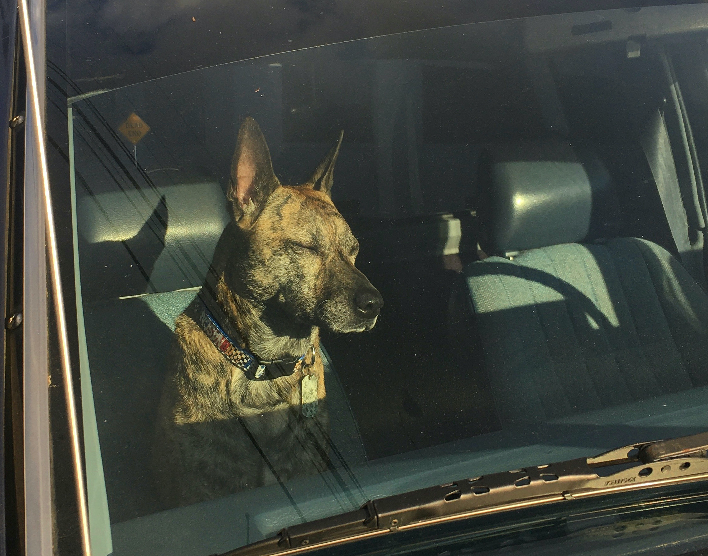

Hi
My name is Caroline Cerussi. I am a 29 year old SAGITARIUS who has been in Portland since 2015 after moving from NYC. I studied Industrial Design at Pratt Institute of Design, where I gained extensive experience in design processes and production. My hobbies include furniture building, which I utilized after graduating when I started my own furniture design company. From there, I branched into Interior Design and worked for Design Within Reach for 3 years, where I worked hands on with local Portland designers. My interest in coding came from my experience in the design world. I wanted to see what else I could create. With the help of Epicodus, my classmates, and teachers, I hope to become a great coder!
Aside from design and work, I love puzzles, board games, hanging out with my friends, and contributing to my community. I try to travel when I can, and go on adventures with my dog, Finn!
I LOVE music. Check out some songs on one of my most listened to playlists on Spotify: